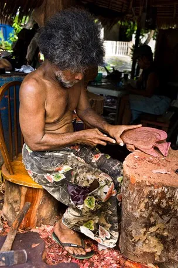
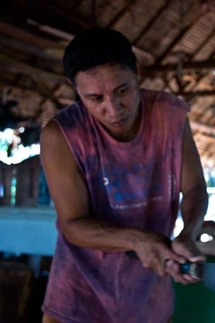
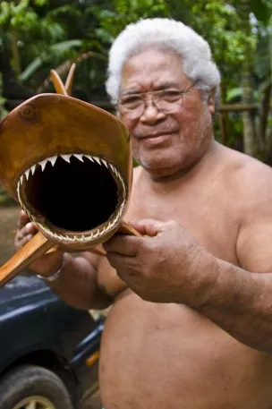

Culture
Kapingamarangi Way
The Kapingamarangi people are a Polynesian community living in the Federated States of Micronesia, primarily on the remote Kapingamarangi atoll. They are known for their strong cultural identity, deeply rooted traditions, and close connection to the ocean and natural environment. Their way of life has long depended on fishing, farming, and the careful use of local resources. The Kapingamarangi people are especially respected for their rich artistic heritage, including skilled wood carving and intricate weaving, which reflect their history, beliefs, and daily life. Their language, customs, and communal values continue to be preserved and passed down through generations, showing their resilience and pride in maintaining their unique cultural heritage.
Photo Gallery


